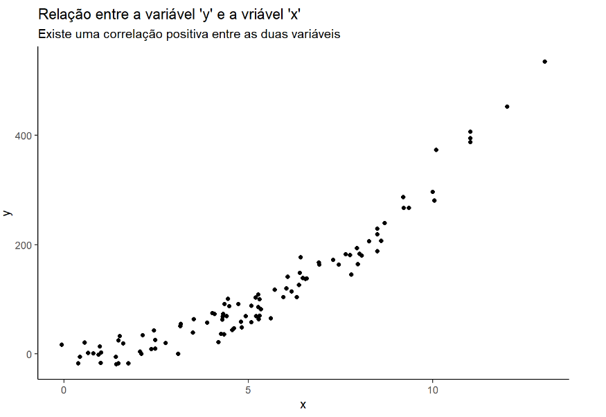
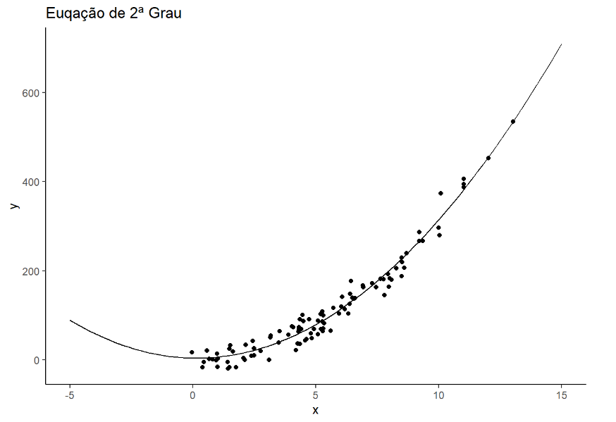

Vetores
Um vetor em R é uma estrutura básica dentro da linguagem, que permite armazenar uma quantidade numérica ou string (letras ou caracteres), em um único objeto. O vetor possui apenas 01 única dimensão.

As funções polinomiais podem ser classificadas quanto a seu grau. O grau de uma função polinomial corresponde ao valor do maior expoente da variável do polinômio, ou seja, é o valor de n da função. Em matemática, função polinomial é uma função P(x) , que pode ser expressa da forma:
O objetivo deste artigo não é a falarmos da matemática pura, mesmo porque a minha formação é Ciências Econômicas, peço desculpas aos matemáticos, por esta introdução. O propósito desse artigo é dar uma introdução para o próximo Artigo, que falaremos de ão linear simples e multipla.
Iremos utilizar a função read.csv().Abaixo demonstraremos como carregar um conjunto de dados,
lembrando que é preciso determinar alguns parâmetros, file ou path, caminho do diretório do arquivo
em seu computador, header indica se o conjunto de dados tem ou não o nome das variáveis e como é um arquivo
csv temos que demonstrar qual é o separador, nesse dataset é a vírgula.
Abaixo temos 02 exemplo, o primeiro,
baixar o arquivo, e salva em seu computador. Ou Caso preferir pode
utilizar a segunda opção que pega o arquivo direto do repositório do GitHub.
# Primeira Opção
df <- read.csv(file = 'C:/Users/Downloads/Data.csv', header = TRUE, sep = ",")
dfOu
# Segunda Opção
df <- read.csv(file = 'https://github.com/rodolffoterra/rodolffoterra.github.io/blob/main/dados/pacientes.csv', header = TRUE, sep = ",")
df| y | x | |
|---|---|---|
| 1 | 172.010604 | 7.2940069 |
| 2 | 181.047184 | 7.75541205 |
| 3 | -4.948489 | 0.4429789 |
| 4 | 169.053939/td> | 4.9272564 |
| 5 | 139.063419 | 6.4762602 |
Este artigo é um conhecimento teórico, iremos trabalhar com esta teoria na prática,
no próximo Artifo. Podemos observar que o nossa conjunto de dados, possui apenas 02 colunas,
que chamaremos de X e Y. Abaixo iremos plotar um gráfico de relação x e Y e observar como, a
correlação dessas duas variáveis. Para a construção dos gráficos precisamos carregar uma biblioteca muito utilizada
para a construção de gráficos:
 e outro biblioteca para a construção da correlação entre
as variáveisa: corrplot.
e outro biblioteca para a construção da correlação entre
as variáveisa: corrplot.
library(ggplot2)
library(corrplot)ggplot() +
geom_point(data=df, aes(x=x, y=y)) +
labs(title = "Relação entre a variável 'y' e a vriável 'x'",
subtitle = "Existe uma correlação positiva entre as duas variáveis") +
theme_classic()
Ao observar a tabela não consiguimos observar uma relação entre as duas variáveis, mas quando plotamos um gráfico scatterplot podemos observar claramente que quando a variável x aumente consequentemente a variável y também aumenta. Podemos dizer que as duas variáveis possuem uma correlação positiva. Jamais podemos afirmar que as duas variáveis possui uma relação de causa e efeito. No próximo artigo, veremos mais detalhes em relação a isto.
Abaixo demonstramos uma planilha de correlação entre as variáveis. Na parte superior a esquerda e na parte inferior a direita, é a correlação da variável com ela mesma, ou seja, y com y e x com x, respectivamente. Quando observamos a correlação da variável y com x, ou y com y, a ordem não interfere, temos um valor positivo de 0.94.corrplot(cor(df), method = "number")A correlação nunca pode ser maior do que 1 ou menor do que menos 1. Uma correlação próxima a zero indica que as duas variáveis
não estão relacionadas. Uma correlação positiva indica que as duas variáveis movem juntas, e a relação é forte quanto mais a
correlação se aproxima de um. Uma correlação negativa indica que as duas variáveis movem-se em direções opostas, e que a
relação também fica mais forte quanto mais próxima de menos 1 a correlação ficar. Duas variáveis que estão perfeitamente
correlacionadas positivamente (r=1) movem-se essencialmente em perfeita proporção na mesma direção, enquanto dois conjuntos
que estão perfeitamente correlacionados negativamente movem-se em perfeita proporção em direções opostas.
Uma regressão simples é uma extensão do conceito correlação/covariância. Ela tenta explicar uma variável, a qual é chamada
variável dependente, usando a outra variável, chamada variável independente. Mantendo a tradição estatística, seja Y a
variável dependente e X a variável independente. Se as duas variáveis são plotadas uma contra a outra num gráfico de
espalhamento, com Y no eixo vertical e X no eixo horizontal, a regressão tenta ajustar uma linha reta através dos pontos de
tal modo que minimiza a soma dos desvios quadrados dos pontos da linha. Consequentemente, ela é chamada de regresssão
ordinária dos mínimos quadrados (OLS). Quando tal linha é ajustada, dois parâmetros emergem, um é o ponto em que a linha
corta o eixo Y, chamado de intercepção da regressão, e o outro é a inclinação da linha de regressão.
Aqui, n=1. Por isso, os polinômios de grau 1 têm a forma  .
As funções deste tipo são chamadas de função afim. Se , chamamos
esta função afim de linear.
Por exemplo, é uma função polinomial de grau um composta de
dois monômios.
.
As funções deste tipo são chamadas de função afim. Se , chamamos
esta função afim de linear.
Por exemplo, é uma função polinomial de grau um composta de
dois monômios.
lm(y~m, data = df)| ## ## Call: ## lm(formula = y ~ x, data = df) ## ## Coeficients: ## (Intercept) x ## -71.53 35.25 |
Criando a função linear da reta
f <- function(x) {
return(35.25*x - 71.53)
}Plotar o gráfico com a função de primeiro grau
ggplot()+
geom_point(data=df, aes(x=x, y=y))+
stat_function(data=data.frame(x=c(0,15)), aes(x=x), fun=f) +
labs(title = "Euqação de 1ª Grau") +
theme_classic()Podemos chegar no mesmo gráfico sem criar a função polinomia. Apenas utilizando os recursos
que a biblioteca ggplot2 utilizando a função geom_smooth(method = lm)
ggplot(data=df, aes(x=x, y=y))+
geom_point() +
geom_smooth(method=lm, fill = "blue", se = FALSE) +
scale_x_continuous(breaks = seq(min(0), max(15), by = 5))+
labs(title='Regressão Linear simples') +
theme_classic()Para conhecimento, podemos utilizar a suavidade da reta. Aumentar o grau de liberdade, como mostra no gráfico abaixo
ggplot(data=df, aes(x=x, y=y))+
geom_point() +
geom_smooth(method=lm, fill = "Blue", color = "blues") +
scale_x_continuous(breaks = seq(min(0), max(15), by = 5)) +
labs(title='Regressão Linear simples',
subtitle = " Com suavidade") +
theme_classic()O Gráfico abaixo irá identificar somente os pontos que estão localizados em acima da regressão linear que foi criada, para depois conseguimos medir a diferença da reta e dos pontos afastados da reta MMQ.
x <- df$x
y <- f(x)
means <- data.frame(x,y)
ggplot()+
geom_point(data=df, aes(x=x, y=y))+
stat_function(data=data.frame(x=c(-5,15)), aes(x=x), fun=f)+
geom_point(data=means, aes(x=x, y=y), color="Red", size=1.5) +
labs(title='Regressão Linear simples',
subtitle = "Somente os pontos que fazem parte a regressão linear") +
theme_classic() "O Método dos Mínimos Quadrados (MMQ), ou Mínimos Quadrados Ordinários (MQO) ou OLS (do inglês
Ordinary Least Squares) é uma técnica de otimização matemática que procura encontrar o melhor
ajuste para um conjunto de dados tentando minimizar a soma dos quadrados das diferenças entre o
valor estimado e os dados observados (tais diferenças são chamadas resíduos).
É a forma de estimação mais amplamente utilizada na econometria. Consiste em um estimador que
minimiza a soma dos quadrados dos resíduos da regressão, de forma a maximizar o grau de ajuste do
modelo aos dados observados.
Um requisito para o método dos mínimos quadrados é que o fator imprevisível (erro) seja
distribuído aleatoriamente e essa distribuição seja normal. O Teorema Gauss-Markov garante
(embora indiretamente) que o estimador de mínimos quadrados é o estimador não-enviesado de mínima
variância linear na variável resposta.
Outro requisito é que o modelo é linear nos parâmetros, ou seja, as variáveis apresentam uma
relação linear entre si. Caso contrário, deveria ser usado um modelo de regressão não-linear.""
df$group <- 1:100
means$group <- 1:100
# join
groups <- rbind(df, means)ggplot()+
geom_point(data=df, aes(x=x, y=y))+
stat_function(data=data.frame(x=c(-5,15)), aes(x=x), fun=f)+
geom_point(data=means, aes(x=x, y=y), color="red", size=1.5) +
geom_line(data=groups, aes(x=x, y=y, group=group)) +
labs(title='Regressão Linear simples',
subtitle = "Método dos Mínimos Quadrados") +
theme_classic() Para conseguirmos o valor do MMQ = sum((df$y-means$y)^2) = 149.675,3.
Em matemática, uma equação quadrática ou equação do segundo grau é uma equação polinomial
de grau dois.A forma geral deste tipo de equação é:
, em que x é uma variável, sendo a, b e c constantes, com a ≠ 0 (caso contrário, a
equação torna-se linear (equação de primeiro grau)). As constantes a, b e c, são
chamadas respectivamente de coeficiente quadrático, coeficiente linear e coeficiente
constante ou termo livre.
A variável x representa um valor a ser determinado, e também é chamada de incógnita.
O termo “quadrático” vem de quadratus, que em latim significa quadrado. Equações
quadráticas podem ser resolvidas por meio da fatoração, do completamento de quadrados,
do uso de gráficos, da aplicação do método de Newton ou do uso de uma fórmula. Um uso
frequente das equações do segundo grau é em modelos simples de cálculo das trajetórias
de projéteis em movimento.
lm(y ~ x + I(x^2),data=df)| ## ## Call: ## lm(formula = y ~ x + I(x^2), data = df) ## ## Coeficients: ## (Intercept) x I(x^2) ## 2.3633 -0.9543 3.1977 |
Plotar o gráfico com a função de segundo grau.
f1 <- function(x){
return(3.1977*x^2 -0.9543*x + 4.3633)
}Plotar o gráfico com a função de primeiro grau
ggplot()+
geom_point(data=df, aes(x=x, y=y))+
stat_function(data=data.frame(x=c(-5,15)), aes(x=x), fun=f1) +
labs(title = "Euqação de 2ª Grau") +
theme_classic()
Podemos chegar no mesmo gráfico sem criar a função polinomia. Apenas utilizando os recursos que a biblioteca ggplot2 utilizando a função geom_smooth(method = loess)
ggplot(data=df, aes(x=x, y=y))+
geom_point()+
geom_smooth(method=loess, fill = "red", color="red")+
labs(title = "Euqação de 2ª Grau",
subtitle = "Com suavidade") +
theme_classic()Para consegui visualizar melhor a equação de segundo grau, vamos ampliar o zoom do gráfico:
ggplot()+
Sgeom_point(data=df, aes(x=x, y=y))+
stat_function(data=data.frame(x=c(-150,150)), aes(x=x), fun=f1)+
geom_point(data=means, aes(x=x, y=y), color="red", size=1.5) +
labs(title = "Equação do 2ª Grau") +
theme_classic()O Gráfico abaixo irá identificar somente os pontos que estão localizados em acima da regressão linear que foi criada, para depois conseguimos medir a diferença da reta e dos pontos afastados da reta MMQ.
means$y <- f1(means$x)ggplot()+
geom_point(data=df, aes(x=x, y=y))+
stat_function(data=data.frame(x=c(-5,15)), aes(x=x), fun=f1)+
geom_point(data=means, aes(x=x, y=y), color="red", size=1.5) +
labs(title='Euqação do Segundo Grau') +
theme_classic()A agora iremos demonstrar no gráfico o MMQ
groups <- rbind(df, means)ggplot()+
geom_point(data=df, aes(x=x, y=y))+
stat_function(data=data.frame(x=c(-5,15)), aes(x=x), fun=f1)+
geom_point(data=means, aes(x=x, y=y), color="red", size=1.5) +
geom_line(data=groups, aes(x=x, y=y, group=group)) +
labs(title='Equação do Segundo Grau',
subtitle = "Método dos Mínimos Quadrados") +
theme_classic() Para conseguirmos o valor do MMQ = sum((df$y-means$y)^2) = 376.656,5.
Em matemática , uma função cúbica é uma função da forma
, onde os coeficientes a , b , c e d são números reais e
a variável x assume valores reais e a ≠ 0 . Em outras palavras, é uma função polinomial de
grau três e uma função real . Em particular, o domínio e o codomínio são o conjunto dos
números reais.
Definir f ( x ) = 0 produz uma equação cúbica da forma,
cujas soluções são chamadas de raízes da função.
Uma função cúbica tem uma ou três
raízes reais (que podem não ser distintas); todos os polinômios de grau ímpar têm pelo menos
uma raiz real.
O gráfico de uma função cúbica sempre tem um único ponto de inflexão . Pode ter dois pontos
críticos , um mínimo local e um máximo local. Caso contrário, uma função cúbica é monotônica.
gráfico de uma função cúbica é simétrico em relação ao seu ponto de inflexão; isto é, é
invariante sob uma rotação de meia volta em torno deste ponto. Até uma transformação afim,
existem apenas três gráficos possíveis para funções cúbicas.
lm(y~x + I(x^2) + I(x^3), data=df)| ## ## Call: ## lm(y~x + I(x^2) + I(x^3), data=df) ## ## Coeficients: ## (Intercept) x I(x^2) I(x^3) ## -4.24630 5.30177 1.90713 0.07108 |
Plotar o gráfico com a função de terceiro grau.
f2 <- function(x){
return(0.07108*x^3 + 1.90713*x^2 +5.30177*x -4.24630)
}Plotar o gráfico com a função de primeiro grau
ggplot()+
geom_point(data=df, aes(x=x, y=y))+
stat_function(data=data.frame(x=c(-5,15)), aes(x=x), fun=f2) +
labs(title = "Euqação de 3ª Grau") +
theme_classic()O Gráfico abaixo irá identificar somente os pontos que estão localizados em acima da regressão linear que foi criada, para depois conseguimos medir a diferença da reta e dos pontos afastados da reta MMQ.
means$y <- f2(means$x)ggplot()+
geom_point(data=df, aes(x=x, y=y))+
stat_function(data=data.frame(x=c(-5,15)), aes(x=x), fun=f1)+
geom_point(data=means, aes(x=x, y=y), color="red", size=1.5) +
labs(title='Euqação do terceiro Grau') +
theme_classic()A agora iremos demonstrar no gráfico o MMQ
groups <- rbind(df, means)ggplot()+
geom_point(data=df, aes(x=x, y=y))+
stat_function(data=data.frame(x=c(-5,15)), aes(x=x), fun=f1)+
geom_point(data=means, aes(x=x, y=y), color="red", size=1.5) +
geom_line(data=groups, aes(x=x, y=y, group=group)) +
labs(title='Equação do Terceiro Grau',
subtitle = "Método dos Mínimos Quadrados") +
theme_classic() Para conseguirmos o valor do MMQ = sum((df$y-means$y)^2) = 376.656,5.
Mudando a Escala do Gráfico para conseguirmos visualizar a equação de terceiro grau:
ggplot()+
geom_point(data=df, aes(x=x, y=y))+
stat_function(data=data.frame(x=c(-150,150)), aes(x=x), fun=f2)+
geom_point(data=means, aes(x=x, y=y), color="red", size=1.5) +
geom_line(data=groups, aes(x=x, y=y, group=group)) +
labs(title='Equação do 3ª Grau') +
theme_classic()As bibliotecas são conjuntos de funções já desenvolvida que irá facilitar o nosso trabalho com algum
determinado assunto. Este artigo irá trabalhar expecificamente com o pacote spline, um fremework que nos
permite criar um modelo que aprende com as tendências do conjunto de dados, se ser necessários criarmos equações do primeiro, segundo ou n graus.
Ao mexer nos subparâmetros da biblioteca, conseguimos ajustar mais ou menos o modelo preditivo.
É preciso que se tome cuidado ao construir um modelo que se aprenda demais, para não ocorrer um Overfitting do modelo.
install.packages(“splines”)
library(splines)Este comando é realizado apenas uma vez, após ter instalado em sua máquina você nas próximas vezes só precisar carrega-lo.
Para iniciar precisamos excluir algumas colunas em nosso modelo:
df$group <- NULL
means$y <- NULL
means$group <- NULLPrimeiramente iremos criar um modelo para que ele aprenda a correlação entra as variáveis X e
Y do nosso
cojunto de dado. e como subparêmetro df = 10.
fit <- smooth.spline(df$x, df$y, df=10)
means$y <- predict(fit,means$x)$Y
sum((df$y - means$y)^2)| ## [1] 32613,69 |
Este valor acima é o MMQ do nosso modelo. Quando utilizamos a equação de primeiro grau, obtivemos um MMQEquação_1a =
149.675,3 e com a equação de segundo grau ela aumentou para MMQEquação_2a =
376.656,5.
Já com o nosso modelo, o MMQ foi reduzido
para MMQspline_10 = 32.613,89.
f3 <-function(x){
return(predict(fit,x)$y)
}ggplot()+
geom_point(data=df, aes(x=x, y=y))+
stat_function(data=data.frame(x=c(-2,14)), aes(x=x), fun=f3, color = "red", size = 0.8) +
labs(title='Equação utilizando o Package Spline', subtitle = "Ajustada em 10") +
theme_classic()Sobre-ajuste ou sobreajuste é um termo usado em estatística para descrever quando um modelo estatístico se ajusta muito bem ao conjunto de dados anteriormente observado, mas se mostra ineficaz para prever novos resultados. É comum que a amostra apresente desvios causados por erros de medição ou fatores aleatórios.
Iremos criar um modelo que sofrerá um Overfitting, modelo que irá aprender de mais com o conjunto de dados,
e quando exister novos conjunto de dados, que tenha apenas os valores de y, ele não conseguirá prever os valores de x.
Observe o gráfio anterior as partes extremas, da esqueda e da direita, a linha consegui seguir uma tendência,
mesmo não existindo pontos menores que 0 e maiores que 15 no eixo x. Diferente do modelo abaixo. que iremos utilizar como
subparâmetro df = 40.
fit <- smooth.spline(df$x, $y, df=40)
means$y <- predict(fit,means$x)$Y
sum((df$y - means$y)^2)| ## [1] 19.780,78 |
Conseguimos reduzir ainda mais o o MMQ para MMQspline_40 = 19.780,78.
ggplot()+
geom_point(data=df, aes(x=x, y=y))+
Sstat_function(data=data.frame(x=c(-2,14)), aes(x=x), fun=f3) +
geom_point(data=means, aes(x=x, y=y), color="red) +
labs(title=Equação utilizando o Package Spline,
subtitle = "Ajustada em 40") +
theme_classic()Temos que tomar cuidade com este modelo, pois podemos dizer que o modelo não conseguiu aprender a relação de X e Y, ele simplesmente fez uma cópia. Ao observar o último ponto a direita, a linha perde completamente o seu sentido, indo em uma tendência de alta e quando não existe mais ponto, simplesmente ela vai para uma tendência de baixa. O mesmo se dá ao lado esquerdo, podemos observar ao olho nú do centro do gráfico ir acompanhando a esquerda, notamos, que quando menor o valor de x menor o valor de y, acompanhando também este movimento, como já havíamos mencionado na correlação, no começo do artigo. Mesmo não existindo mais ponto menores que o eixo 0, ao utilizar a imaginação soponhamos que os valores iriam diminuir, ou seja, os valores de y seriam negativos ao lado esquerdo, porém como o menor ponto de eixo (x,y) é um pouco acima da tendência o modelo criou uma tendência para a orientação contrária. Vejamos o gráfico:
Um vetor em R é uma estrutura básica dentro da linguagem, que permite armazenar uma quantidade numérica ou string (letras ou caracteres), em um único objeto. O vetor possui apenas 01 única dimensão.
Matrizes é caracterizado como uma coleção de vetores, sendo todos do mesmo tipo (numérico ou caracteres) armazenados entre linhas e colunas.

Um data frame é semelhante a uma matriz mas as suas colunas têm nomes e podem conter dados de tipo diferente. Um data frame pode er visto como uma tabela de uma base de dados, em que cada linha corresponde a um registo (linha) da tabela.

Em estatística, a análise exploratória de dados é uma abordagem à análise de conjuntos de dados de modo a resumir suas características principais, frequentemente com métodos visuais.

Em estatística ou econometria, regressão linear é uma equação para se estimar a condicional de uma variável y, dado os valores de algumas outras variáveis x.

Em Breve
O Kaggle é uma plataforma gratuita que tem como objetivo inicial promover desafios entre profissionais da área de análise, porém atualmente se tornou uma grande comunidade de Data Sciente. Para demonstrar o trabalho de modelagem de dados, foi coletado um dataset fornecido no campeonato “House Sales in King Country, USA” da plataforma Kaggle. Temos como objetivo principal deste projeto, realizar Bussiness Analyst no conjunto de dados. E como segundo objetivo desenvolver um modelo de regressão que possa prever o valor de um imóvel com base nas variáveis apresentadas no banco de dados.Primeiramente coletamos o dataset fornecido pelo Kaggles. Ao coletar tais informações percebemos que o conjunto de dados é composto por 21 variáveis (tamanho da casa, quantidade de quartos, banheiros, entre outros) e o valor vendido da casa entre o período de Maio de 2014 a Maio de 2015, variável dependendo, ou seja, a variável que queremos que o nosso modelo nos apresente.